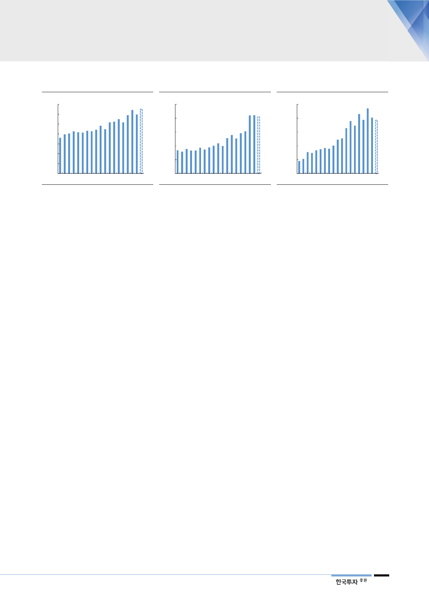

[그림 20] 아연 생산량
(천톤)
700
600
500
400
300
200
100
0
00 02 04 06 08 10 12 14 16 18F
자료: 한국투자증권
[그림 21] 연 생산량
(천톤)
500
400
300
200
100
0
00 02 04 06 08 10 12 14 16 18F
자료: 한국투자증권
[그림 22] 은 생산량
(천톤)
2,500
2,000
1,500
1,000
500
0
00 02 04 06 08 10 12 14 16 18F
자료: 한국투자증권
‘Q에 의한 성장’ 은 일단락
Free metal 1% 하락하면
영업이익률 0.8%p 하락
또 다른 20년에 과거와 같은 눈부신 성과를 내지 못 하리란 법은 없다. 그러나
중기적으로는 과거의 영광이 지속된다고 보기는 어려울 것으로 판단된다. 우선
생산능력이 더 늘어나기는 어려울 것이다. 불과 2년 전인 2016년에 대규모 증설
이 마무리되었다. 추가 증설은 시기상조일 뿐만 아니라 글로벌 정광과 금속 수급
에 있어서 제련사의 부담을 가중시킨다. 이에 이른바 ‘Q에 의한 성장’을 예상하기
는 쉽지 않다. 여기에 제련수수료 계약 기간이 단축되면 불확실성이 확대된다. 만
약 free metal이 하락하게 된다면 이익률 하락으로 직결된다. 우리의 분석에 따
르면 free metal이 1% 하락하면 영업이익률이 0.8%p 하락한다.
세계 최고의 제련사임에는
의심의 여지가 없으나
제련업 투자는 시기상조
우리의 우려 중 하나라도 현실화된다면 중장기 실적에 부정적인 동시에 불확실성
을 확대시키는 결과를 초래한다. 현재 제련사들은 과거에 찾아보기 어려운 힘든
상황을 겪고 있다. 거꾸로 생각하면 지금이 최악이고 향후 상황이 개선된다면, 거
듭 강조하지만, 세계 최고의 제련사인 고려아연 투자에 나서야 한다. 그러나 현재
상황이 제련업이 처한 최악이 아니라면 고려아연에 대한 투자는 시기상조일 수
있다.
13